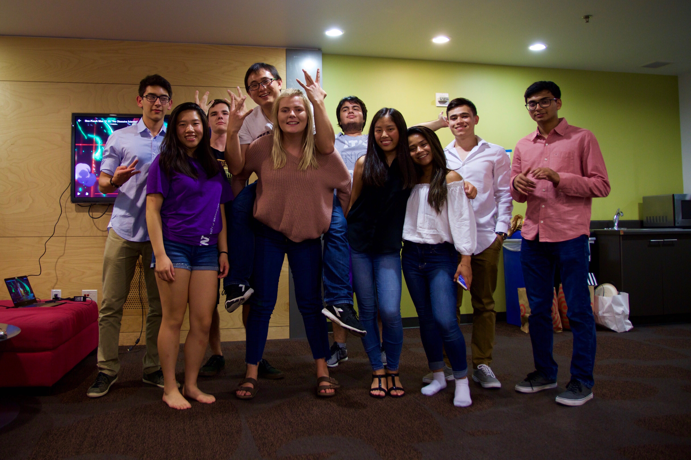
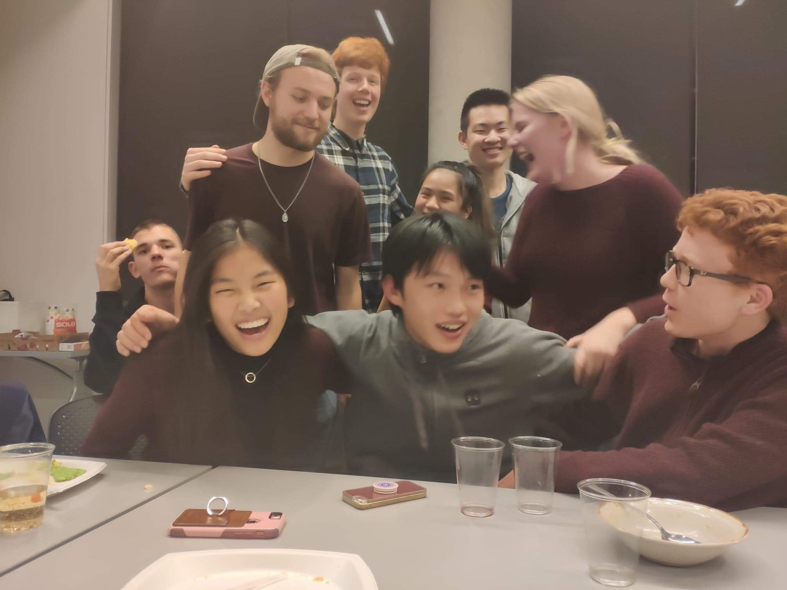
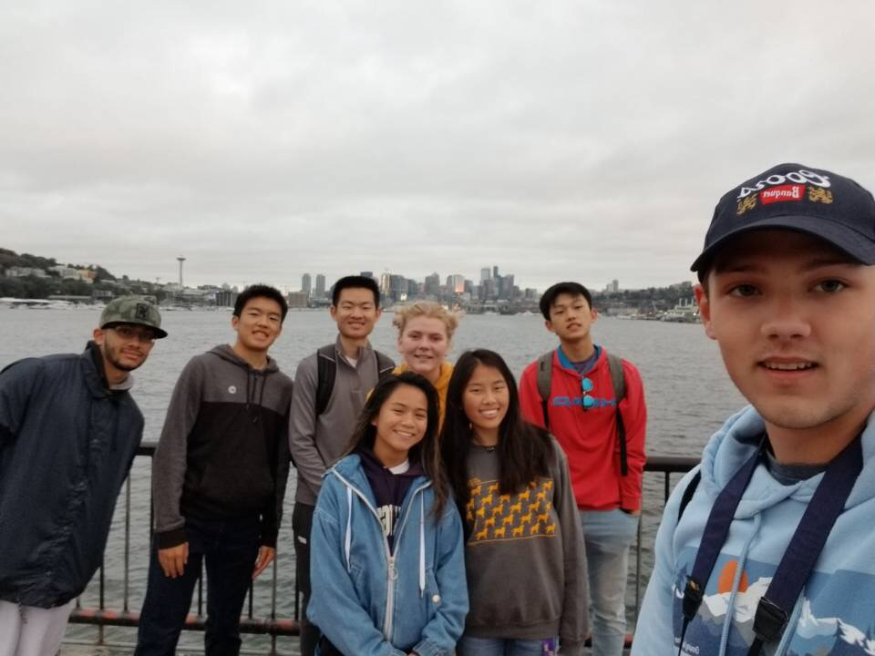
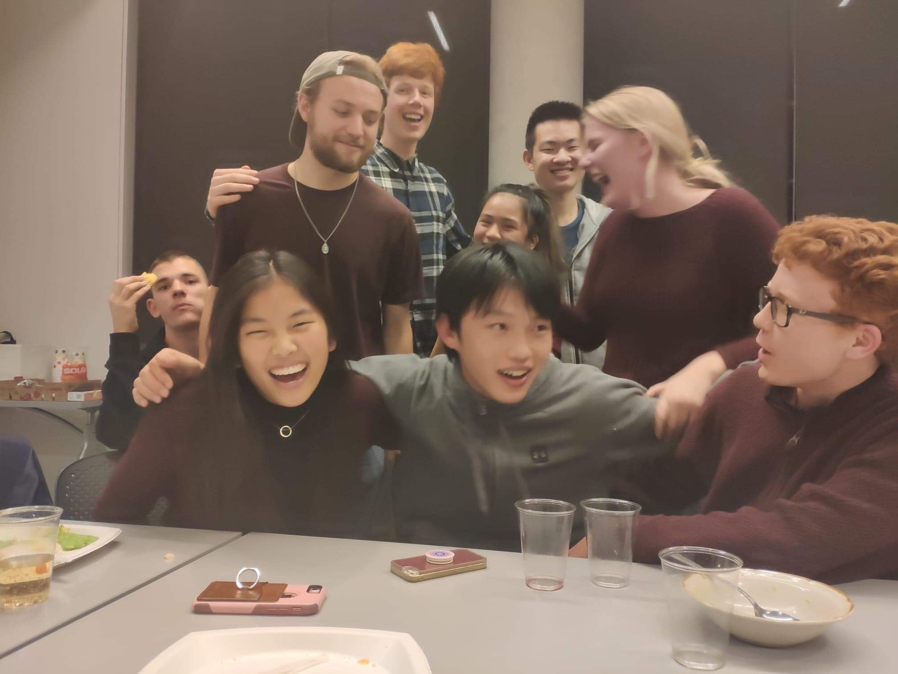
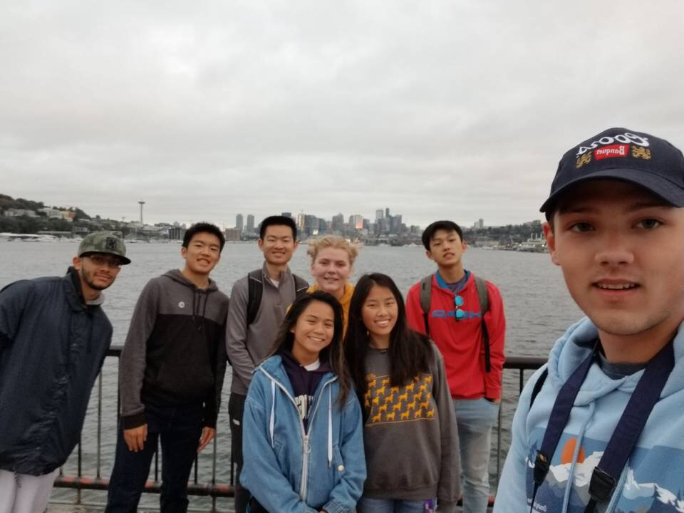
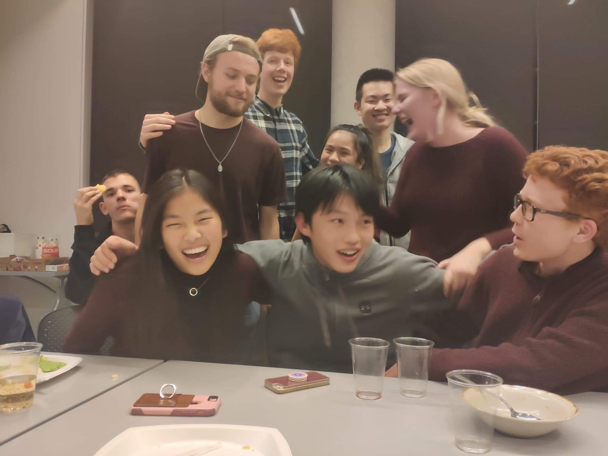
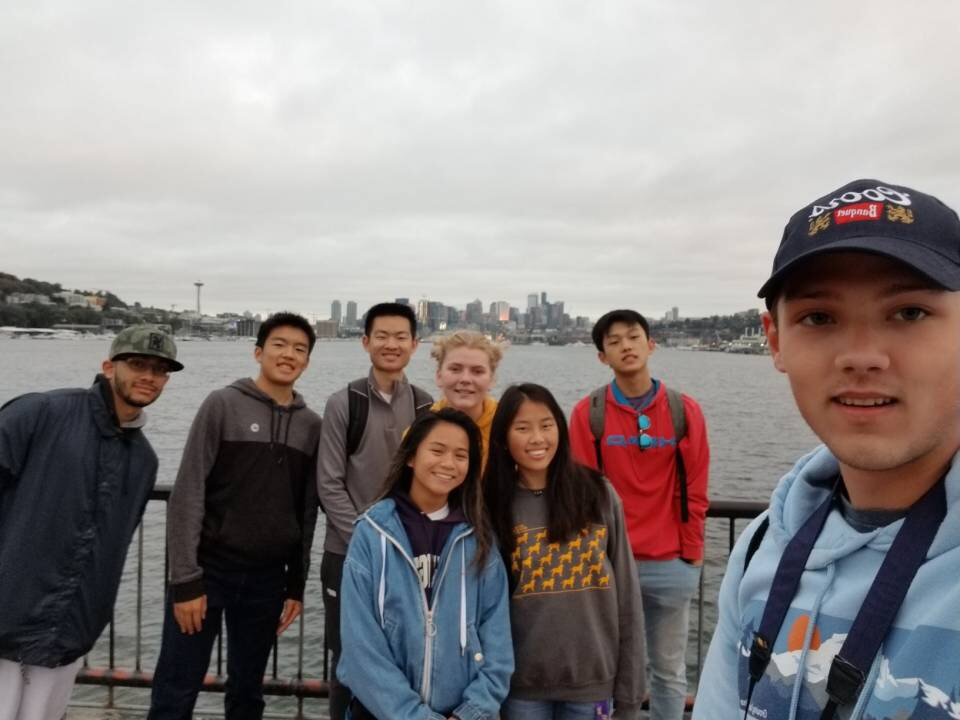

 1
 2
 3
 4
2
 3
 4
2
 3
 4
I came to the University of Washington early for the Early Fall Start and took Indistinguishable from Magic: New Technologies, Science, and Us partly to meet new people and become acclimated to this new enviornment and I am so glad I did. EFS did everything I wanted it to but I am especially thankful for the people who came into my life from it. I have never created such a strong and lasting bond with a group of people as I did through EFS and know that these are people in my life that will stay. I love the slightly chaotic energy from this group and how they've encouraged me to be be my best self. As a result, I have and will continue to recommend the EFS option to everyone that chooses to attend UW.
- This photo is from a celebration of one of our friends birthdays ~ Aug. 30
- This photo was taken after Dawg Daze ~ Sept. 22
- This photo was taken during our Thanksgiving celebration ~ Nov. 17
- This photo was taken after we woke up at 5am to watch the sun rise at Gas Works ~ Sept. 7